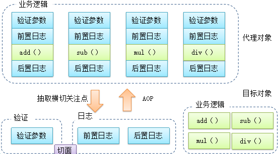
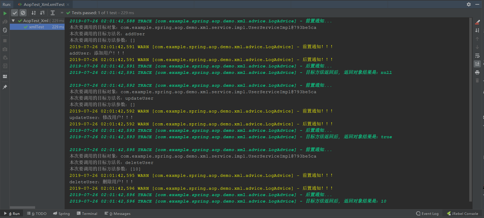

AOP 简介
AOP（Aspect-Oriented Programming, 面向切面编程）: 是一种新的方法论，是对传统 OOP（Object-Oriented Programming，面向对象编程） 的补充。
AOP 的主要编程对象是切面（aspect），而切面是模块化的横切关注点。
在应用 AOP 编程时， 仍然需要定义公共功能，但可以明确的定义这个功能在哪里， 以什么方式应用, 并且不必修改受影响的类。这样一来横切关注点就被模块化到特殊的对象（切面）里。
AOP 的好处：(1) 每个事物逻辑位于一个位置， 代码不分散，便于维护和升级；(2) 业务模块更简洁，只包含核心业务代码。
传统开发模式 先来看一个需求 下面是分别定义了一个接口和它的实现类，功能非常简单，实现正整数的加、减、乘、除操作，代码如下：
CalculateService.java
1 2 3 4 5 6 7 8 9 10 11 12 13 14 15 package com.springdemo.service;public interface CalculateService int add (int a, int b) int subtract (int a, int b) int times (int a, int b) int divide (int a, int b) }
CalculateServiceImpl.java
1 2 3 4 5 6 7 8 9 10 11 12 13 14 15 16 17 18 19 20 21 22 23 24 25 26 27 28 29 30 31 package com.springdemo.service.impl;import com.springdemo.service.CalculateService;import org.springframework.stereotype.Component;@Component public class CalculateServiceImpl implements CalculateService @Override public int add (int a, int b) return a + b; } @Override public int subtract (int a, int b) return a - b; } @Override public int times (int a, int b) return a * b; } @Override public int divide (int a, int b) return a / b; } }
我们的额外需求是：
需求1-做日志：在程序执行期间追踪正在发生的活动
如果我们采用传统的方式，只能在每个方法里面先做参数的验证，然后再进行日志记录，这样不仅代码，冗余，而且不利于后期的维护，每个方法在处理核心逻辑的同时还必须兼顾其他多个关注点。
以日志需求为例, 只是为了满足这个单一需求, 就不得不在多个模块（方法）里多次重复相同的日志代码。 如果日志需求发生变化, 必须修改所有模块。
类似于这样：
1 2 3 4 5 6 7 8 9 10 11 12 13 14 15 16 17 18 19 20 21 22 @Component public class CalculateServiceImpl implements CalculateService private static final Logger LOGGER = Logger.getLogger(CalculateServiceImpl.class ) ; @Override public int add (int a, int b) if (a < 0 || b < 0 ) { System.out.println("参与计算的两个整数有一个为负数: " +a+"," +b); return -1 ; } LOGGER.debug("add操作之前日志..." ); int c = a + b; LOGGER.debug("add操作之后日志..." ); return c; } }
可以看出，在 add 方法中插入了验证和日志的功能，但是，此方法的核心只是做加法操作，我们在业务实现时还要考虑一些共性的东西，这显然是不好的一种方式，那如何在不改变业务类实现的基础上，动态添加验证、日志功能呢？
解决方案 一种比较好的方式是：使用动态代理解决上述问题
使用一个代理将对象包装起来，然后用该代理对象取代原始对象。
AOP 图示 我们把上面的需求以图的方式呈现出来，可以清晰地看到共性的操作，把共性的地方抽取出来，模块化成切面，然后让这个切面按我们的预期进行工作，这就是 AOP 的作用。

上面的图示中，我们抽取出来共性，也就是验证和日志功能，但是，光有这个共性，还是不能够模块化成切面的，它还需要其它的辅助元素才能成为一个切面。具体如何使用 AOP 完成上述的需求，Spring 给出了具体的方案，下面让我们来看看详细的案例。
Spring 启用 AspectJ 基于 xml 配置 在演示案例前我们先来了解些 AOP 术语：
Aspect 中文意思：切面，它只是一个统称，一种名词，它由 Advice 和 PointCut 组成；Advice 中文意思：通知，它是切面的代码载体，可以想象成一个封装好的 JAVA 类，把共性代码封装在这里；PointCut 中文意思：切点，它是用来匹配目标方法的一段配置信息，可以使用注解也可以使用 XML 来配置，它由多个JoinPoint 组成；JoinPoint 中文意思：连接点，它是指匹配到目标方法之后执行 Advice 的时机，共有如下5种：
before： 在目标方法执行之前after：在目标方法之后afterThrowing： 在目标方法的 catch 块中afterReturn： 在目标方法的 finally 块中around： 环绕，相当于是上面4种的一个综合体
Weave 中文织入：它是一个过程，就是切面织入到目标对象方法的过程，它的原理是基于 代理 来实现的，Spring 目前支持两种代理：
基于 JDKjava.lang.reflect.Proxy ，这是默认的情况，但是这个实现有一个前提条件是目标对象必需要有实现的接口。
基于第三方组件 CGLIB
创建 pom.xml 1 2 3 4 5 6 7 8 9 10 11 12 13 14 15 16 17 18 19 20 21 22 23 24 25 26 27 28 29 30 31 32 33 34 35 36 37 38 39 40 41 42 43 44 45 46 47 48 49 50 51 52 53 54 55 56 57 58 59 60 61 62 63 64 65 66 67 68 69 70 71 72 73 74 75 76 77 78 79 80 81 82 83 84 85 86 87 88 89 90 91 92 93 94 95 96 97 98 99 100 101 102 103 104 105 106 107 108 109 110 111 <?xml version="1.0" encoding="UTF-8"?> <project xmlns ="http://maven.apache.org/POM/4.0.0" xmlns:xsi ="http://www.w3.org/2001/XMLSchema-instance" xsi:schemaLocation ="http://maven.apache.org/POM/4.0.0 http://maven.apache.org/xsd/maven-4.0.0.xsd" > <modelVersion > 4.0.0</modelVersion > <groupId > com.example</groupId > <artifactId > spring-aop-demo</artifactId > <version > 1.0.0-SNAPSHOT</version > <properties > <project.build.sourceEncoding > UTF-8</project.build.sourceEncoding > <maven.compiler.source > 1.8</maven.compiler.source > <maven.compiler.target > 1.8</maven.compiler.target > <spring.version > 5.1.5.RELEASE</spring.version > <lombok.version > 1.16.20</lombok.version > <junit.version > 4.12</junit.version > <log4j.version > 1.2.17</log4j.version > <slf4j.version > 1.7.25</slf4j.version > </properties > <dependencies > <dependency > <groupId > org.springframework</groupId > <artifactId > spring-context</artifactId > <version > ${spring.version}</version > </dependency > <dependency > <groupId > org.springframework</groupId > <artifactId > spring-test</artifactId > <version > ${spring.version}</version > <scope > test</scope > </dependency > <dependency > <groupId > org.springframework</groupId > <artifactId > spring-aspects</artifactId > <version > ${spring.version}</version > </dependency > <dependency > <groupId > junit</groupId > <artifactId > junit</artifactId > <version > ${junit.version}</version > </dependency > <dependency > <groupId > org.projectlombok</groupId > <artifactId > lombok</artifactId > <version > ${lombok.version}</version > <scope > provided</scope > </dependency > <dependency > <groupId > org.slf4j</groupId > <artifactId > slf4j-api</artifactId > <version > ${slf4j.version}</version > </dependency > <dependency > <groupId > org.slf4j</groupId > <artifactId > slf4j-log4j12</artifactId > <version > ${slf4j.version}</version > </dependency > <dependency > <groupId > org.slf4j</groupId > <artifactId > jcl-over-slf4j</artifactId > <version > ${slf4j.version}</version > </dependency > <dependency > <groupId > org.slf4j</groupId > <artifactId > jul-to-slf4j</artifactId > <version > ${slf4j.version}</version > </dependency > <dependency > <groupId > log4j</groupId > <artifactId > log4j</artifactId > <version > ${log4j.version}</version > </dependency > </dependencies > <build > <plugins > <plugin > <groupId > org.apache.maven.plugins</groupId > <artifactId > maven-compiler-plugin</artifactId > <version > 3.7.0</version > <configuration > <source > ${java.version}</source > <target > ${java.version}</target > <encoding > ${project.build.sourceEncoding}</encoding > <showWarnings > true</showWarnings > </configuration > </plugin > </plugins > </build > </project >
创建 UserService 借口和 UserServiceImpl实现类 1 2 3 4 5 6 7 8 9 10 package com.example.spring.aop.demo.xml.service;public interface UserService public void addUser () public boolean updateUser () public int deleteUser (int id) }
1 2 3 4 5 6 7 8 9 10 11 12 13 14 15 16 17 18 19 20 21 22 23 package com.example.spring.aop.demo.xml.service.impl;import com.example.spring.aop.demo.xml.service.UserService;public class UserServiceImpl implements UserService @Override public void addUser () System.out.println("addUser：添加用户！！！" ); } @Override public boolean updateUser () System.out.println("updateUser：修改用户！！！" ); return true ; } @Override public int deleteUser (int id) System.out.println("deleteUser：删除用户！！！" ); return id; } }
创建 LogAdvice 日志通知 1 2 3 4 5 6 7 8 9 10 11 12 13 14 15 16 17 18 19 20 21 22 23 24 25 26 27 28 29 30 31 32 33 34 35 36 37 38 39 40 41 42 43 44 45 46 47 48 package com.example.spring.aop.demo.xml.advice;import org.aspectj.lang.JoinPoint;import org.aspectj.lang.ProceedingJoinPoint;import org.slf4j.Logger;import org.slf4j.LoggerFactory;import java.util.Arrays;public class LogAdvice private static final Logger LOGGER = LoggerFactory.getLogger(LogAdvice.class ) ; public void beforeMethod (JoinPoint joinPoint) LOGGER.trace("前置通知..." ); System.out.println("本次要调用的目标对象：" + joinPoint.getTarget()); System.out.println("本次要调用的目标方法名：" + joinPoint.getSignature().getName()); System.out.println("本次要调用的目标方法参数：" + Arrays.toString(joinPoint.getArgs())); } public void afterReturn (Object obj) LOGGER.trace("目标方法返回后, 返回对象结果是：" + obj); } public void afterMethod () LOGGER.trace("后置通知..." ); } public Object aroundMethod (ProceedingJoinPoint pjp) Object result = null ; LOGGER.warn("前置通知！！！" ); try { result = pjp.proceed(); } catch (Throwable e) { LOGGER.warn("异常通知！！！" ); throw new RuntimeException(e); } LOGGER.warn("后置通知！！！" ); return result; } }
创建 log4j.properties 1 2 3 4 5 6 7 8 9 10 11 12 13 14 15 16 17 18 19 20 log4j.rootLogger =INFO, console, file log4j.appender.console =org.apache.log4j.ConsoleAppender log4j.appender.console.layout =org.apache.log4j.PatternLayout log4j.appender.console.layout.ConversionPattern =%d %p [%c] - %m%n log4j.appender.file =org.apache.log4j.DailyRollingFileAppender log4j.appender.file.File =logs/log.log log4j.appender.file.layout =org.apache.log4j.PatternLayout log4j.appender.A3.MaxFileSize =1024KB log4j.appender.A3.MaxBackupIndex =10 log4j.appender.file.layout.ConversionPattern =%d %p [%c] - %m%n log4j.logger.com.example.spring.aop.demo.xml.advice =TRACE log4j.logger.com.example.spring.aop.demo.anno.advice =TRACE
重点：创建 spring-context-xml.xml 配置1 2 3 4 5 6 7 8 9 10 11 12 13 14 15 16 17 18 19 20 21 22 23 24 25 26 27 28 29 30 31 32 33 34 35 36 37 38 39 40 41 42 43 44 45 46 47 48 49 50 51 52 53 54 55 56 57 58 59 <?xml version="1.0" encoding="UTF-8"?> <beans xmlns ="http://www.springframework.org/schema/beans" xmlns:xsi ="http://www.w3.org/2001/XMLSchema-instance" xmlns:aop ="http://www.springframework.org/schema/aop" xsi:schemaLocation ="http://www.springframework.org/schema/beans http://www.springframework.org/schema/beans/spring-beans.xsd http://www.springframework.org/schema/aop http://www.springframework.org/schema/aop/spring-aop.xsd" > <bean id ="userService" class ="com.example.spring.aop.demo.xml.service.impl.UserServiceImpl" > </bean > <bean id ="logAdvice" class ="com.example.spring.aop.demo.xml.advice.LogAdvice" > </bean > <aop:config > <aop:aspect id ="logAdviceAapect" ref ="logAdvice" > <aop:pointcut id ="log_pc" expression ="execution(* com.example.spring.aop.demo.xml.service.impl.UserServiceImpl.*(..))" /> <aop:before method ="beforeMethod" pointcut-ref ="log_pc" /> <aop:after-returning method ="afterReturn" pointcut-ref ="log_pc" returning ="obj" /> <aop:after method ="afterMethod" pointcut-ref ="log_pc" /> <aop:around method ="aroundMethod" pointcut-ref ="log_pc" /> </aop:aspect > </aop:config > </beans >
创建 AopTest_Xml 测试类 1 2 3 4 5 6 7 8 9 10 11 12 13 14 15 16 17 18 19 20 21 22 23 24 25 package com.example.spring.aop.demo;import com.example.spring.aop.demo.xml.service.UserService;import org.junit.Test;import org.junit.runner.RunWith;import org.springframework.context.ApplicationContext;import org.springframework.context.support.ClassPathXmlApplicationContext;public class AopTest_Xml @Test public void xmlTest () ApplicationContext ac = new ClassPathXmlApplicationContext("spring-context-xml.xml" ); UserService userService = (UserService) ac.getBean("userService" ); userService.addUser(); System.out.println(); boolean b = userService.updateUser(); System.out.println(); int i = userService.deleteUser(10 ); System.out.println(); } }
测试结果：

Spring 启用 AspectJ 基于注解配置 改造实现类 UserServiceImpl ，加上 @Service 注解 1 2 3 4 5 6 7 8 9 10 11 12 13 14 15 16 17 18 19 20 21 22 23 24 package com.example.spring.aop.demo.anno.service.impl;import com.example.spring.aop.demo.xml.service.UserService;import org.springframework.stereotype.Service;@Service ("userService" )public class UserServiceImpl implements UserService @Override public void addUser () System.out.println("addUser：添加用户！！！" ); } @Override public boolean updateUser () System.out.println("updateUser：修改用户！！！" ); return true ; } @Override public int deleteUser (int id) System.out.println("deleteUser：删除用户！！！" ); return id; } }
改造 LogAdvice 日志通知，加上 @Component 和 @Aspect 注解 1 2 3 4 5 6 7 8 9 10 11 12 13 14 15 16 17 18 19 20 21 22 23 24 25 26 27 28 29 30 31 32 33 34 35 36 37 38 39 40 41 42 43 44 45 46 47 48 49 50 51 52 53 54 55 56 57 58 59 60 61 62 63 64 65 66 67 68 69 70 71 72 73 74 75 package com.example.spring.aop.demo.anno.advice;import org.aspectj.lang.JoinPoint;import org.aspectj.lang.ProceedingJoinPoint;import org.aspectj.lang.annotation.*;import org.slf4j.Logger;import org.slf4j.LoggerFactory;import org.springframework.stereotype.Component;import java.util.Arrays;@Component @Aspect public class LogAdvice private static final Logger LOGGER = LoggerFactory.getLogger(LogAdvice.class ) ; @Pointcut (value = "execution(* com.example.spring.aop.demo.anno.service.impl.UserServiceImpl.*(..))" ) public void log_pc () } @Before ("log_pc()" ) public void beforeMethod (JoinPoint joinPoint) LOGGER.trace("前置通知..." ); System.out.println("本次要调用的目标对象：" + joinPoint.getTarget()); System.out.println("本次要调用的目标方法名：" + joinPoint.getSignature().getName()); System.out.println("本次要调用的目标方法参数：" + Arrays.toString(joinPoint.getArgs())); } @AfterReturning (value = "log_pc()" , returning = "obj" ) public void afterReturn (Object obj) LOGGER.trace("目标方法返回后, 返回对象结果是：" + obj); } @After ("log_pc()" ) public void afterMethod () LOGGER.trace("后置通知..." ); } @Around ("execution(* com.example.spring.aop.demo.anno.service.impl.UserServiceImpl.*(..))" ) public Object aroundMethod (ProceedingJoinPoint pjp) Object result = null ; LOGGER.warn("前置通知！！！" ); try { result = pjp.proceed(); } catch (Throwable e) { LOGGER.warn("异常通知！！！" ); throw new RuntimeException(e); } LOGGER.warn("后置通知！！！" ); return result; } }
创建 spring-context-anno.xml 注解配置 1 2 3 4 5 6 7 8 9 10 11 12 13 <?xml version="1.0" encoding="UTF-8"?> <beans xmlns ="http://www.springframework.org/schema/beans" xmlns:xsi ="http://www.w3.org/2001/XMLSchema-instance" xmlns:aop ="http://www.springframework.org/schema/aop" xmlns:context ="http://www.springframework.org/schema/context" xsi:schemaLocation ="http://www.springframework.org/schema/beans http://www.springframework.org/schema/beans/spring-beans.xsd http://www.springframework.org/schema/aop http://www.springframework.org/schema/aop/spring-aop.xsd http://www.springframework.org/schema/context http://www.springframework.org/schema/context/spring-context.xsd" > <context:component-scan base-package ="com.example.spring.aop.demo.anno" /> <aop:aspectj-autoproxy /> </beans >
创建 AopTest_Anno 测试类 1 2 3 4 5 6 7 8 9 10 11 12 13 14 15 16 17 18 19 20 21 22 23 24 25 26 27 28 29 package com.example.spring.aop.demo;import com.example.spring.aop.demo.xml.service.UserService;import org.junit.Test;import org.junit.runner.RunWith;import org.springframework.beans.factory.annotation.Autowired;import org.springframework.test.context.ContextConfiguration;import org.springframework.test.context.junit4.SpringJUnit4ClassRunner;@RunWith (SpringJUnit4ClassRunner.class ) @ContextConfiguration("classpath:spring-context-anno.xml") public class AopTest_Anno @Autowired private UserService userService; @Test public void annoTest () userService.addUser(); System.out.println(); boolean b = userService.updateUser(); System.out.println(); int i = userService.deleteUser(10 ); System.out.println(); } }
测试结果：
If you like this blog or find it useful for you, you are welcome to comment on it. You are also welcome to share this blog, so that more people can participate in it. If the images used in the blog infringe your copyright, please contact the author to delete them. Thank you !